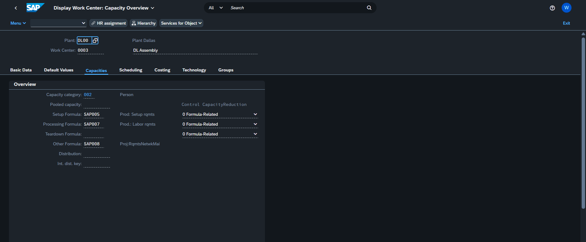
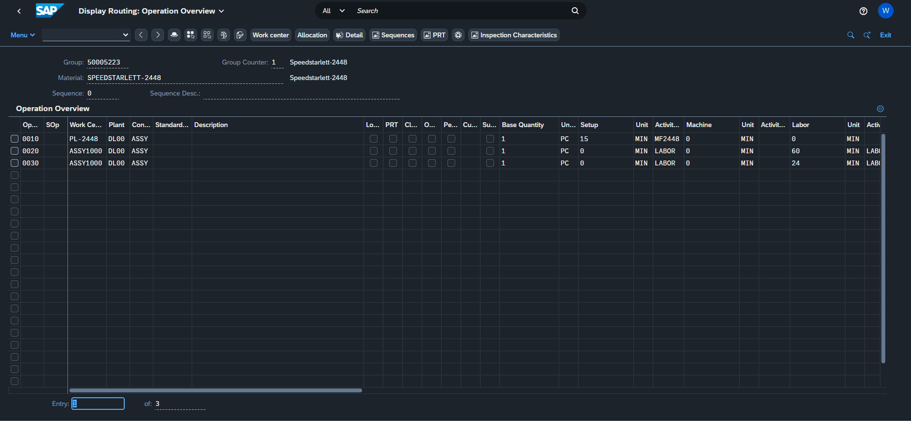
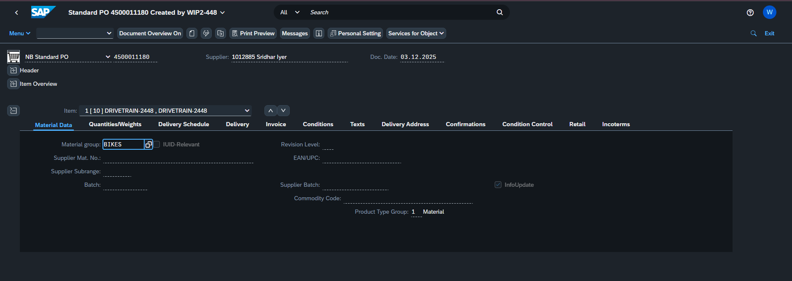
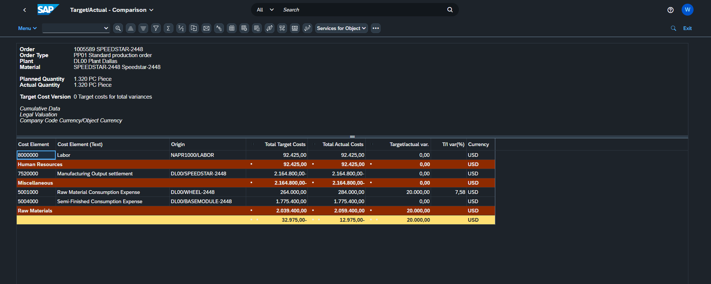
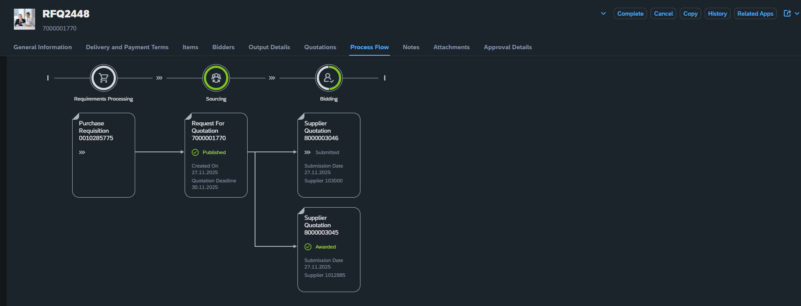
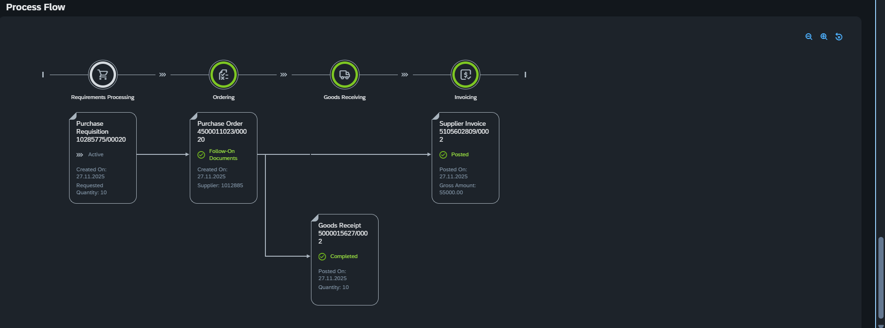
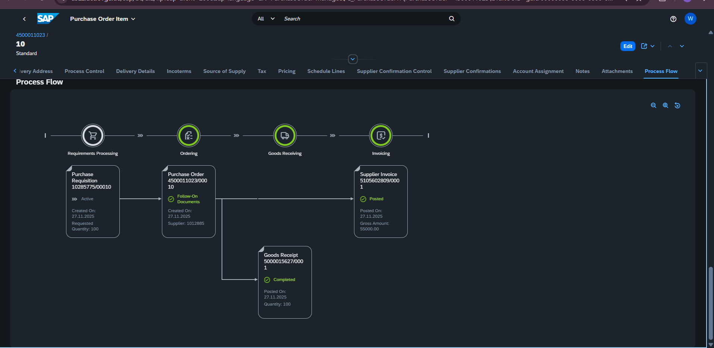

Supply Chain Management Graduate | Data-Driven Problem Solver | AI & Analytics Enthusiast
Recent Master of Science graduate specializing in merging cutting-edge AI applications with practical supply chain solutions. Passionate about optimizing complex logistics operations through innovative technology and data analytics.
Academic and practical applications demonstrating supply chain innovation and analytical expertise
Constructor University
Business Intelligence Dashboard
Constructor University
Managing a product's journey from initial design to final production is often fragmented. I implemented a comprehensive Design-to-Operate workflow in SAP S/4HANA to bridge the gap between engineering, procurement, and finance.

Configuring manufacturing logic and labor capacities.

Engineering manufacturing routings and translating designs into shop-floor operations.

Executing high-value procurement transactions and vendor management.

Financial oversight and production variance reporting.
Constructor University
Constructor University
Constructor University
Constructor University
Constructor University
Constructor University
Constructor University
Strategic procurement requires a seamless flow from identifying requirements to final vendor settlement. I managed the end-to-end S2P process in SAP S/4HANA to ensure material availability while maintaining strict financial integrity and high-performance sourcing standards.

Strategic Sourcing: Managing the transition from internal Requisition to Supplier Quotation and Awarding.

Procurement Execution: Visualizing the document flow from Order to Goods Receipt and Invoice.

MD04 Stock/Requirements Analysis: Real-time visibility into material planning, stock levels, and procurement triggers.
Peer-reviewed research contributions advancing supply chain sustainability and AI applications
Professor of Industrial Engineering
Constructor University Bremen | Primary Coordinator & WP Leader, SORT4CIRC EU Project
Contact: ofatahival@Constructor.University | +49.421.200-3077
Your Staffing Solutions Pvt Ltd
October 2022 - May 2023 (8 months) | Gujarat, India
Constructor University Bremen
Graduated: August 2023
Thesis: Development of a Conceptual Framework for Applying Generative AI Models in Supplier Selection Processes
Karnavati University
2019 - 2022